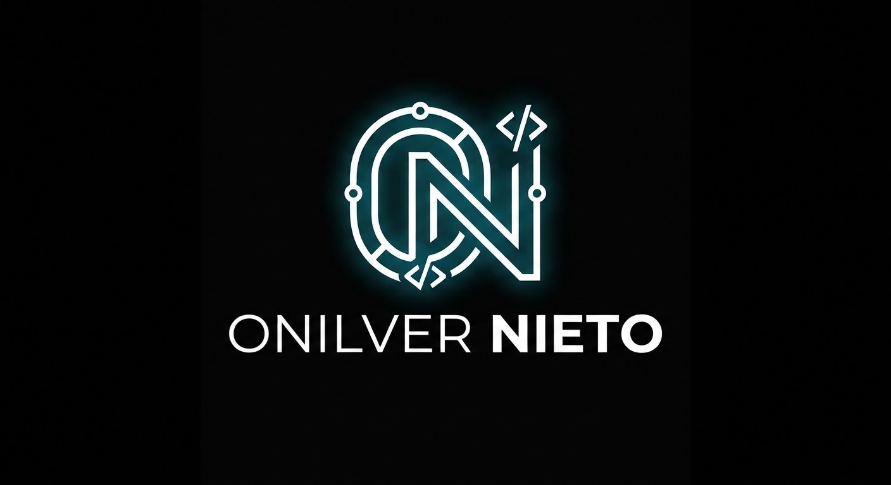
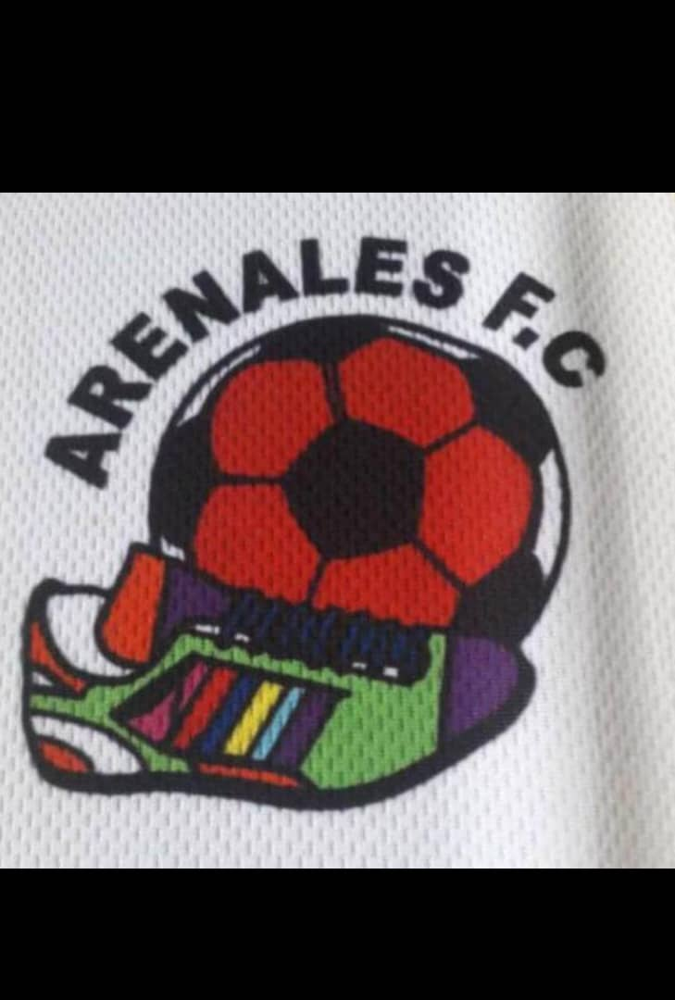
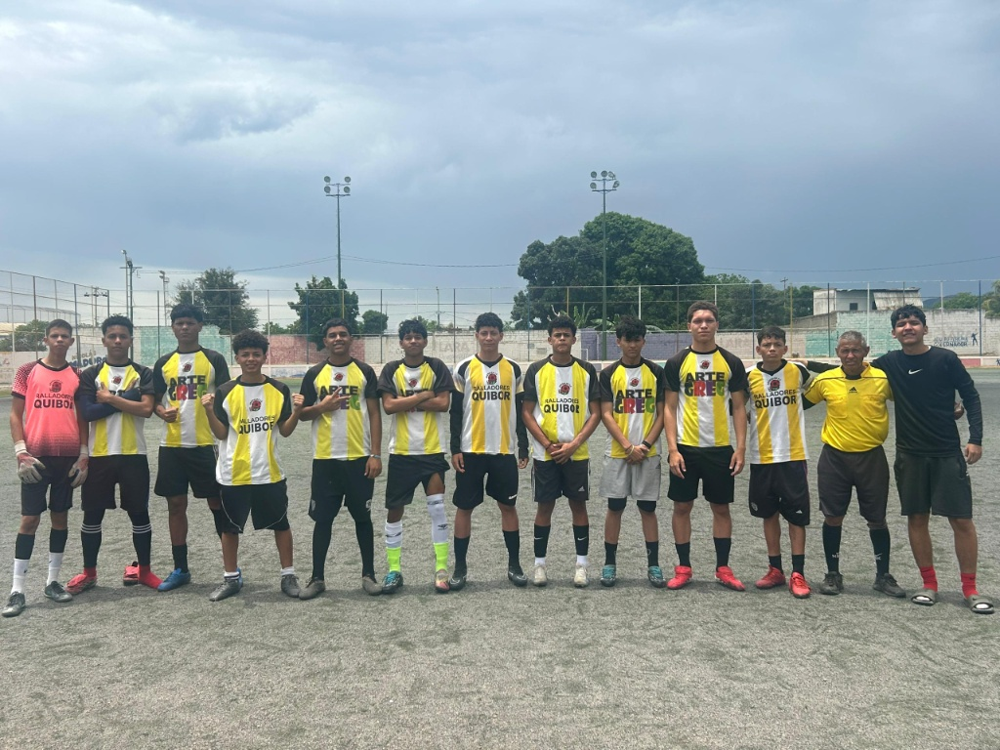

Inicio
Mi nombre es Onilver Nieto, nací el 16 de diciembre del 2008. Actualmente tengo 17 años de edad, soy un apasionado por el mundo de la programación, el desarrollo web y los deportes, con un amor incondicional por el fútbol. A través de este espacio comparto un poco de mi trayectoria, mis metas profesionales y las pasiones que definen mi día a día, buscando siempre aprender y superar nuevos retos tanto en la tecnología como en el terreno de juego.
Sobre mí
El fútbol ocupa un lugar fundamental en mi vida; tengo el orgullo de defender los colores del equipo ARENALES F.C., donde cada entrenamiento y partido me han enseñado el valor de la disciplina, la resiliencia y el trabajo en equipo. En el ámbito académico, actualmente estudio Ingeniería en Informática, encontrando en la tecnología una herramienta fascinante para transformar ideas en soluciones reales y funcionales.

Comencé a dar mis primeros pasos en competiciones oficiales con este equipo a los 15 años de edad. Gracias a mi versatilidad táctica y entrega en la cancha, me desempeño como un jugador polivalente capaz de adaptarme a distintas posiciones, disputando intensos campeonatos en las categorías sub-18 y sub-20. Esta experiencia deportiva ha fortalecido mi carácter, enseñándome a mantener la calma bajo presión y a liderar con el ejemplo.

Proyecto
Actualmente, mi proyecto de vida principal gira en torno a mi formación académica y personal: consolidar mis bases en la ingeniería para graduarme con excelencia como Ingeniero en Informática. Aspiro a desarrollar software innovador que aporte valor a la sociedad, mientras disfruto al máximo cada etapa del camino, equilibrando mi pasión por la tecnología con el deporte y los momentos memorables junto a mis seres queridos.
Portafolio
Aquí estarán mis futuros proyectos de desarrollo e informática.